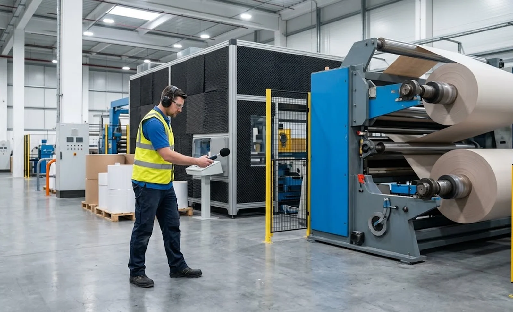
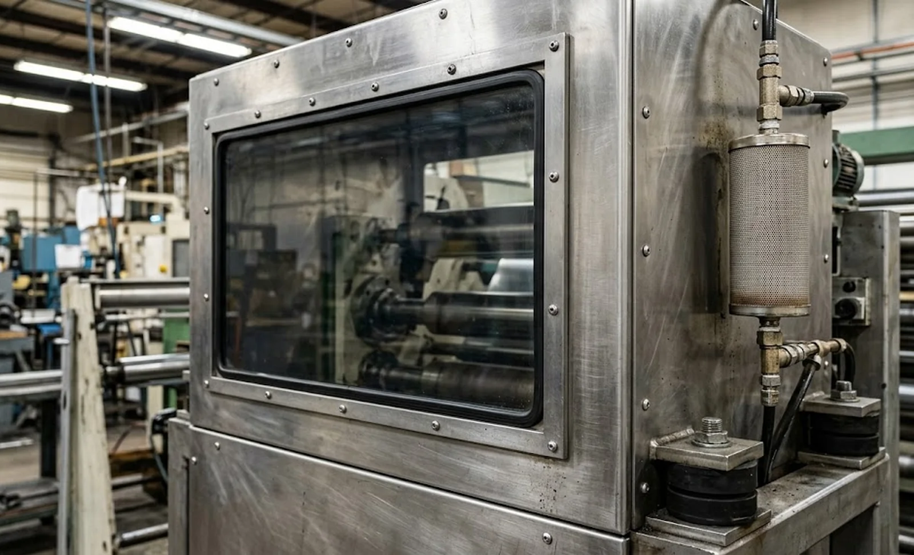

Published October 14, 2026 | By HDPTH Technical Editorial Team

Buyers compare slitter rewinders on width, speed, tension accuracy and automation — and rarely on noise. Then the machine arrives, runs its first shift at full speed, and the shop floor discovers that conversation at the operator station is impossible. In most jurisdictions, a workday average above 85 dBA triggers a formal hearing conservation programme: annual audiometric testing, engineered controls, supplied hearing protection and exposure records. What was omitted from the specification becomes an ongoing compliance cost.
Where slitter rewinder noise actually comes from
Noise rarely comes from where people assume. The web itself is quiet; the offenders are typically:
Trim extraction and vacuum systems. Fans moving edge trim at high velocity are usually the single loudest element, especially with undersized ducting. Gearboxes and drives radiate tonal noise when mesh frequencies excite the frame near resonance. Pneumatic components — knife-holder cylinders, splice tables, unload arms and open exhaust ports — add broadband hiss that is cheap to silence at design time. Knife holders and blades radiate as they wear or lose damping, which is why a machine that was acceptable at commissioning can drift louder over months. Finally, large flat panels on guards and cabinets act as loudspeakers for any vibration fed into them. A supplier who has addressed these at source — isolation mounts, damped panels, sized ducting, mufflers on exhausts — can quote a realistic sound figure; one who cannot will quote nothing at all.
What to write into the specification
A noise requirement is only enforceable if it names three things: the level, the location and the condition. “Low noise” is a marketing word; “≤80 dBA sound pressure at 1 metre from the machine envelope, measured per ISO 11202 during production-speed running, no-load” is a contract clause. Ask also for component-level expectations — an enclosed and silenced trim extraction unit, mufflers on every pneumatic exhaust, gears selected away from structural resonances. For context on how noise fits among the other numbers on a machine datasheet, see our guide on how to read a slitter rewinder spec sheet; noise belongs beside power, air and dimensions, not buried in a footnote.
| Noise source | Typical contribution | Design countermeasure |
|---|---|---|
| Trim extraction fan | Dominant broadband source | Correctly sized ducting, fan selection for duty point, silencers |
| Gearbox / drives | Tonal whine at speed | Gear quality, isolation mounts, speed selection away from resonance |
| Pneumatic exhausts | Hiss at every cycle | Mufflers on all exhaust ports, low-noise valves |
| Knife holders | Grows with blade wear | Damped holders, sharp blade policy, holder maintenance |
| Panels and guards | Radiated structure-borne noise | Damped or ribbed panels, decoupled fasteners |
Enclosures and floor-level measures
Acoustic enclosures work — a lined 50 mm panel enclosure typically reduces radiated noise by 10–20 dBA — but on a slitter rewinder they carry real operational costs. Web threading, knife changes and fault clearing all need access, which means doors, doors need interlocks, and every added layer slows an operator who opens them dozens of times per shift. Enclosures also trap heat and dust and block the sightlines operators rely on. For most plants the practical sequence is: fix the sources first, use partial acoustic screens around the loudest section (often the trim extraction area), and reserve full enclosures for lines with extreme speeds or unusually sensitive neighbouring processes. If hearing protection is still required after these measures, revisit the machine design at the next purchase — the machine safety and guarding guide explains how protective measures must be engineered in, not bolted on.

Measuring at FAT and SAT
Verification belongs in acceptance, exactly like tension calibration or safety checks. At the factory acceptance test, require sound pressure measurements with a calibrated Class 1 or Class 2 meter at the operator stations and at 1 metre around the machine envelope, during full-speed running of each contracted product — spectra, not just overall levels, so a tonal gearbox problem cannot hide inside a passing average. Compare against the contractual limit and the manufacturer’s own declared emission values. Then repeat at site acceptance: floor structure, ceiling height, room reverberation and auxiliary equipment all shift site results, which is why our site acceptance test guide treats noise as a standard SAT line item. Plants that already track machine condition will find noise measurements slot naturally into the workflows described in our condition monitoring guide — a machine that gets louder month over month is telling you a bearing, blade or fan is failing.
Specifying your next slitter rewinder?
Tell HDPTH your material, line speed and shop floor constraints. We engineer noise control at the source — silenced extraction, damped structures, muffled pneumatics — and deliver declared sound values with FAT measurement records, so hearing conservation stays an option instead of an obligation.
Submit Your Project InquiryFrequently asked questions
What noise level should we specify for a slitter rewinder?
Specify a sound pressure limit in dBA at a defined distance and operating condition, for example ≤80 dBA at 1 metre from the machine envelope at production speed, no-load. Around 85 dBA is the threshold where most regulations require hearing conservation programmes, so keeping standing positions below 80 dBA removes mandatory exposure management. Always couple the number to the measurement method so it can be verified.
Which machine components cause the most noise on a slitter rewinder?
In rough order: trim extraction fans, gearboxes running near resonance, pneumatic cylinders and exhausts, knife holders with worn or poorly damped blades, structural panels that radiate vibration, and core chucks under high torque. Component-level testing at FAT identifies which source dominates so the correct countermeasure is applied instead of generic shielding.
Can an acoustic enclosure solve noise problems after installation?
Partially. Enclosures of 50 mm panels with absorptive lining reduce radiated noise by 10–20 dBA, but they complicate web threading, knife changes, maintenance access and operator visibility, and they trap heat that must be extracted. Engineering fixes at the source — isolation mounts, quieter fans, damped panels — are usually cheaper and more practical than retrofitting a full enclosure.
How should noise be measured at FAT and SAT?
Measure sound pressure with a calibrated Class 1 or Class 2 meter at the operator stations and at 1 metre around the machine envelope, during full-speed running of each product recipe, and record the spectrum, not just the overall level. Repeat at site acceptance after installation, because floor structure, room acoustics and auxiliary equipment change the result. Contractual limits must state meter class, positions and conditions.
Does noise reduction conflict with machine guarding and safety requirements?
It can if added carelessly: acoustic panels must not block emergency stops, light curtain sightlines, guard interlocks or required observation windows. Well-designed solutions integrate both — for example, viewing windows in acoustic screens and enclosed, ventilated sections for the loudest drives. Verify with your safety engineer that noise countermeasures preserve compliance with the machine’s risk assessment.
Sources
- OSHA: occupational noise exposure standard 29 CFR 1910.95 and hearing conservation guidance
- ISO: ISO 11202 — noise emission measurement at the work station and other specified positions
- European Union: Directive 2003/10/EC on minimum health and safety requirements for noise exposure
- AIMCAL: web converting machinery design and operation resources